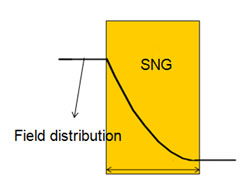
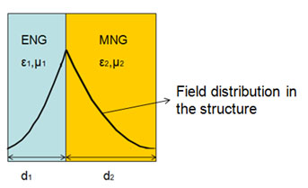
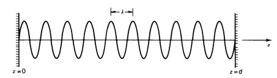
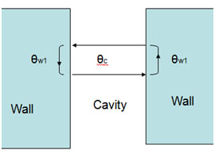
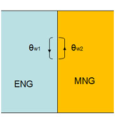
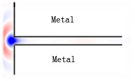
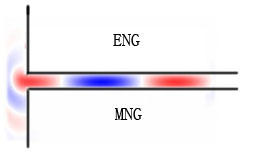

In this page, I will introduce one of my amazing research work in Tongji University. In this work I clarified the phenomenon of the resonance of electromagnetic field in single negative material structure in a uniform simple way. Much work of our group is based on this phenomenon. Although this work of mine was not very helpful in term of publishing paper, for my theory actually indicated that many of studies of our group were just the same things as something well-established. But it really gave me deeper understanding of the principle of electromagnetic wave and new understanding of methodology of academic research and passionate cooperative experience with my colleague. I will try to explain it as simple as possible, so people who do not possess professional knowledge about electromagnetic wave can also understand the content.
The properties of material related to light are permittivity(ε), permeability(μ) and conductivity. For normal material, permittivity and permeability are both positive (ε>0, μ>0)and electromagnetic wave can propagate in it. But for the material which is ε<0, μ>0 (epsilon-negative, ENG) or ε>0, μ<0 (mu-negative, MNG), EM wave is evanescent in it. We call these kinds of material single negative material (SNG) in which EM wave cannot propagate. But it was found that when ENG and MNG were placed close together and satisfied certain conditions, EM wave can pass though the structure and form a resonant field in the interface between ENG and MNG. For a long time, people didn't know the cause of resonance in term of physical principle. They thought maybe this was a new phenomenon of EM wave and much research work of our group in Tongji University are related with this phenomenon.
Fig.1 Schematic diagram of EM field distribution in a SNG. It shows that the EM wave decays in the SNG and the output intensity of field is much smaller than the input intensity of field, namely the EM wave cannot passes though the SNG.
Fig.2 Schematic diagram of a pair of ENG and MNG, and the resonance field on the interface between the two SNG materials. The output intensity of field is equal to the input intensity of field, namely the EM wave can passes though the SNG. The condition of resonance is ε1/μ1=ε2/μ2 and ε1*μ1*d1=ε2*μ2*d2
It is long well-established that if EM wave is reflected between two reflectors (like metal plane), this structure is called cavity, with certain conditions, the EM wave can resonate and form a standing wave. The condition is that the distance (d) between the two reflectors (length of the cavity) is multiple of half wavelength.
d=mλ/2 (m=1,2,3...)
Fig.3 This is the schematic diagram of a cavity. The length of the cavity is 10.5 time of wavelength, so a standing wave (resonance) is formed in the cavity
It was me first proposed that the resonance in the SNG structure and resonance between two reflectors are the same. It means that the cause of resonance in SNG structure is just the classic resonance of EM wave. To understand this, let us first see a more universal way of description of conditions of resonance of EM wave (in fact it applies for all other form of wave, like sound wave, probability wave in quantum mechanics) is that phase of change along the way of propagation from a point to the same point after the wave travel back should be multiple of π. In the case of metal cavity, the total phase change is concerned with the length of cavity and the reflective phase of wall of the cavity. Since all the reflective phase of metal in common conditions is π, so the reflective phase dose not impact to the conditions of resonance, only the length of cavity works. But in the case of SNG pairs, we can view the two SNG materials as two reflectors in cavity. In this case, the length of the cavity is 0, but the reflective phase works. Because SNG material can achieve any reflective phase which depends on its ε,μ.
Fig.4 Schematic diagram of metal cavity. The phase change of a whole circle in the cavity is θw1+θw2+2θc. Because θw1=θw2=π, so the phase condition is only concerned with θc, namely the length of cavity and the wavelength.
Fig.5 Schematic diagram of pair of ENG and MNG. The phase change of a whole circle in the cavity is θw1+θw2. And θw1,θw2 depend on the properties of material and width of the material.
Based on my theory, I derived the resonant conditions in SNG structure based on the resonant condition of metal cavity. In fact I can derived the conditions of resonance of any structure made of SNG, like the structure which normal material is sandwiched by two SNG or which one normal material and one SNG placed together, not just limited to the structure of pair of MNG and ENG. And I also got some new ideas inspired by my theory. It is well known that waveguide cannot transmit the wave whose half wavelength is longer than the width of wave guide. But when the wall of waveguide is made by SNG, this limit is broken.
Fig.6 The blue and red color depict the wave of EM. Fig.6 and Fig.7 show that a EM wave enter a waveguide whose width is smaller than the half wavelength of the EM wave from free space. The waveguide in Fig.6 is normal waveguide which the wall is made by metal and we can see the wave decay very fast when it enter the waveguide.
Fig.7 The wall of waveguide is made by SNG, and the waveguide support the transition very well even when the wave is under the cutoff frequency of the waveguide. In fact it is due to that the reflective phase brought by the SNG wall compensates the lack of room.
In addition, if the SNG material is lossy, namely the conductivity of the material is not 0. In this case, the condition of resonance is more complex. Before I proposed this theory, we didn't know the exact expression of the condition. The only way to find the resonant point was trying various sets of properties. But, I derived the exact expression of the condition when loss is concerned based on my theory. In fact when loss is considered, the conditions of resonance are not only related with phase but also with the amplitude of the wave.
I first mentioned the rough thought of mine to my roommate who was also in our group. He agreed with me and was interested in the idea very much. So we locked ourselves in the dormitory for more than 3 days to develop our idea into a more established conclusion. When we first announced our result in the group meeting, everyone were shocked. Because on one hand, our conclusion meant that some thoughts of our group were not appropriate; on the other hand, our conclusion was completely new and abrupt to them. It took us 3 weeks in weekly group meeting to persuade others. In the end, the whole group got to a common view that in fact all resonant phenomenons of EM wave are caused by the overlap of waves, no matter how strange the appearance it has, and should be under the condition of phase. In fact, a lot of scientific phenomenons are based on the same simple principle, but they do contribute to the world in their one way. So, just proposing that one thing is the same as some classic well-established conclusion is not enough for doing academic research, the important thing is that I should base on the principle I had understood to get more new things.